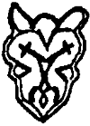

Kitaptaki çizimler ve harita, aksi belirtilmedikçe yazarın elinden çıkmadır. Emre Erdem'in yaptığı çizimler ayrıca belirtilmiştir. Çizimlerin hangi tarihi buluntulara dayandığı aşağıda listelenmiştir:
Tunç tas üzerinde insan figürü. Selçuklu. (Özel koleksiyon) s. V, 7, 25, 59, 122 145. 214, 218, 244, 283. çeşitleme s. 194
Ural Dağları’nda bulunmuş gümüş bir tastaki insan ve at figürleri üzerine çeşitleme. Macar. (St. Petersburg Hermitage Müzesi) s. 1
Nagyszenimiklos hazinesinden altın sürahi üzerinde figür (Viyana Kunsthisıorisches Müzesi) s. 34. 206, 235, 240, 304
Üçüncü Pazırık Kurganı buluntularından. Ahşap efsane kuşu figürü. (St. Petersburg Hermitage Müzesi) s. 42
Bronz at koşum takımı süsü. Kuzey Çin buluntusu (Frank Trippet, The firar Horsemen, Time–Life Books, 1980) –Emre Erdem s. 63
Beşinci Pazırık Kurganı’ndan çıkarılmış keçe örtüdeki figürler üzerine çeşitleme (St. Petersburg Hermitage Müzesi) s. 70
Altay Dağları'nda bulunmuş sığın biçiminde bronzdan çadır tepeliği (Nejat Diyarbekirli, Hun Sanatı) –Emre Erdem, s. 86
Beşinci Pazırık Kurganı'ndan çıkarılmış keçe örtüdeki at figüründen ayrıntı (St. Petersburg Hermitage Müzesi) –Emre Erdem, s. 92
Demir bir mutfak eşyası üzerinde süsleme. Orta Asya, (özel koleksiyon) s. 106, 294
Gümüş tabak üzerine kabartma. Malo–Amkovkaya buluntularından. (St. Petersburg Hermitage Müzesi) s. 162
Firdevsi'nin Şahname'sinden. 1494‘te Salek b. Said tarafından Gilan sultanı Ali Mirza içtin kopya edildi. (Eski Rafael Mitjana ve Vicomte S. Hermelin koleksiyonundan) –Emre Erdem, s. 192
Altay Dağları'nda bulunmuş altın dişi aslan (Frank Trippet, The First Horsemen, Time-Life Books. 1980) s. 199
Metal amulet. Sarkel buluntularından. s. 226, 290, 311, 329
Bronz zırhlı savaşçı figürü. Sarkel buluntularından. s. 299
Birinci Pazınk Kurganı'ndan çıkanları ahşap at koşum takımı süsü (Nejat Diyarbekirli, Hun Sanatı, St. Petersburg Hermitage Müzesi) –Emre Erdem, s. 277